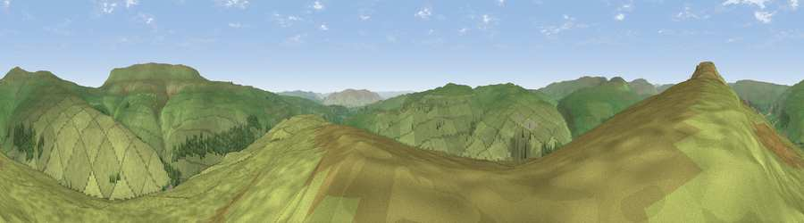

Viewpoint near Kettlewell
#10999 in England · top 18% of its area beats it · near KettlewellWhere it is
The exact computed spot (SD 95425 71975). Click the marker for map links.
The view, rendered

A 360° render of this exact spot computed from the terrain model, tree cover and land cover — summer colours, afternoon light, calibrated against photographs of famous viewpoints. Real trees, hedges and buildings will differ in detail.
The panorama
Grey silhouette: terrain skyline in each direction (720 bearings, Earth curvature and refraction included). Dashed green: skyline with trees (+15 m) and buildings (+8 m) as obstacles. Blue strip: how far the ground is visible on each bearing.
Where the view opens
Wedge length = distance to the farthest visible ground on that bearing (vegetation-aware). Rings at 10, 25 and 50 km.
What fills the view
96% grassland · 4% woodland
Angular shares of the visible panorama (visual magnitude), not map area. Landscape diversity 0.08 (0–1 Shannon).
Key numbers
More beautiful places nearby
The staircase of upgrades: each row has a higher view potential than everything closer. Driving times are estimates from straight-line distance, calibrated against real road routing — check an actual route before setting out.
| Place | Direction | Drive | Score |
|---|---|---|---|
| Viewpoint near Starbotton | NW · 2 km | ~6 min | 68.9 |
| Sweet Hill | E · 5 km | ~11 min | 74.7 |
| Viewpoint near Kettlewell | ENE · 5 km | ~12 min | 75.6 |
| Viewpoint near Kettlewell | NE · 6 km | ~13 min | 76.6 |
| Viewpoint near Buckden | N · 7 km | ~14 min | 77.3 |
| Little Ingleborough | W · 21 km | ~35 min | 78.8 |
| Viewpoint near Ingleton | W · 21 km | ~36 min | 79.5 |
| Whernside | WNW · 24 km | ~39 min | 79.9 |
54.14359, -2.07153 · source: screening · position refined by local search. Computed location — check access rights before visiting.